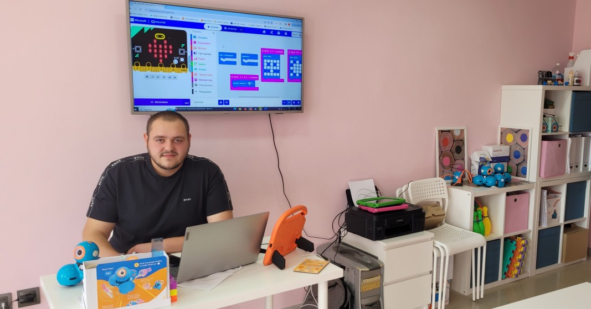
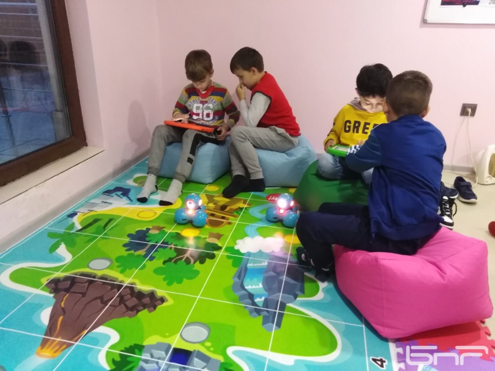

Как Академията по Програмиране и Роботика Променя Бъдещето на Децата
В днешния бързоразвиващ се технологичен свят, програмирането и роботиката са умения,
които стават все по-ценни. Академията по програмиране и роботика за деца предлага
уникална възможност на младите умове да се запознаят с тези иновативни дисциплини
още от рано. Чрез интерактивни уроци, практически проекти и вдъхновяващи преподаватели,
академията създава среда, в която децата не само усвояват технически знания, но и развиват
креативността и критичното мислене. Тези умения не само подготвят децата за бъдещето, но и
им дават увереността да се изправят пред нови предизвикателства и да преследват мечтите си.
Научи още

Защо Да Запишем Децата Си в Академия по Програмиране и Роботика?
Програмирането и роботиката не са само за възрастни – те са за всеки, който иска да разбере как работи
светът на технологиите. Академията по програмиране и роботика за деца предоставя на младите ученици
шанс да се впуснат в света на кода и машините по забавен и достъпен начин. Учебните програми са
съобразени с възрастта и нивото на знания на децата, като същевременно насърчават тяхната любознателност
и ентусиазъм. Със специално разработени курсове и менторска подкрепа, децата могат да научат как да създават
собствени програми и роботи, което не само разширява техния хоризонт, но и ги подготвя за успешна кариера в бъдеще.
Научи още

Ползите от Обучението по Програмиране и Роботика за Децата
Обучението по програмиране и роботика за деца предлага множество ползи, които надхвърлят техническите умения.
На първо място, то насърчава логическото мислене и способността за решаване на проблеми – две ключови умения,
които са полезни във всяка област от живота. Освен това, работата по проекти в академията насърчава екипната
работа и комуникационните умения на децата. Чрез програмирането и роботиката, децата се учат да мислят критично
и да бъдат креативни, като намират иновативни решения на сложни задачи. Всички тези качества са изключително
важни за тяхното бъдеще и професионално развитие.
Научи още

Как Академията по Програмиране и Роботика Вдъхновява Новото Поколение
Академията по програмиране и роботика за деца играе ключова роля в оформянето на бъдещето на новото
поколение. Чрез иновативни методи на преподаване и практическо обучение, академията вдъхновява децата
да изследват света на технологиите и да развиват своите интереси в областта на програмирането и
роботиката. Създаването на собствени проекти и роботи позволява на децата да видят резултатите
от своите усилия и да се гордеят с постиженията си. Тази академия не само ги обучава, но и ги
мотивира да мечтаят големи и да вярват в своите способности, подготвяйки ги за успешна кариера
в технологичния сектор.
Научи още
Интервю в DEVSTYLER
Да Бъдеш Част от Тех Света е Най-Правилното Решение, Което Може да Вземеш
Мартин Каралчев е основател на RoboTech – академия по програмиране и роботика за деца. Той е на 22 години
и е студент в трети курс към Техническия Университет в София със специалност “Информатика и информационни
науки” към Факултет Приложна Математика и Информатика. Мартин изпитва силен интерес към технологичния
свят и иновациите в тази област. За музата, вдъхновението и желанието да оставиш стойностен отпечатък
в образователния свят прочетете в интервюто от първо лице.
Гледай интервюто

Интервю в БНР-Кърджали
Студент създаде първото робоучилище в Кърджали
Първото робоучилище създаде в Кърджали студентът Мартин Каралчев. В школата с предизвикателното име Академия
по програмиране и роботика се обучават ученици от първи до осми клас. Основната ни цел е децата да се учат
чрез играта, като най-важното е да им е интересно, разкрива тайната на успеха младият ръководител. „Избрах
да е в моя роден град Кърджали, защото тук няма извънучилищна дейност, която да насърчава младите хора да
се развиват в тази посока или да им дадат знанията, необходими да процъфтиш в технологичния свят“, обяснява Мартин.
Гледай интервюто

Интервю в БНР-Хорозонт
Млади програмисти от Кърджали с множество награди
Млади програмисти от Кърджали обраха призовите места в национални конкурси. Те са на различна възраст и от
различни училища. Дотолкова са напред в компютърното програмиране, че вече сами създават свои проекти и
дори интернет сайтове.
Гледай интервюто